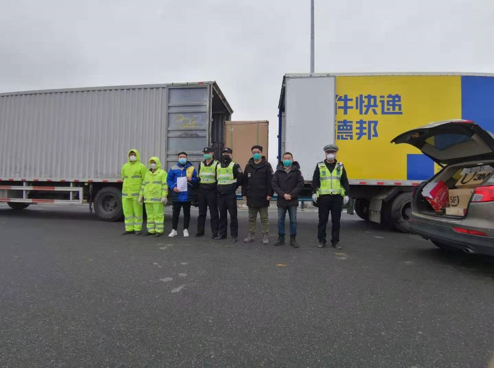
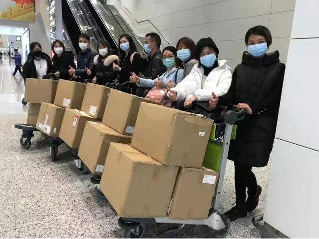
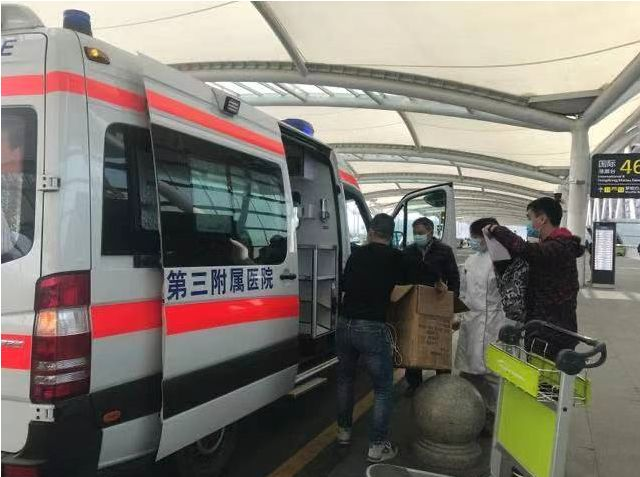
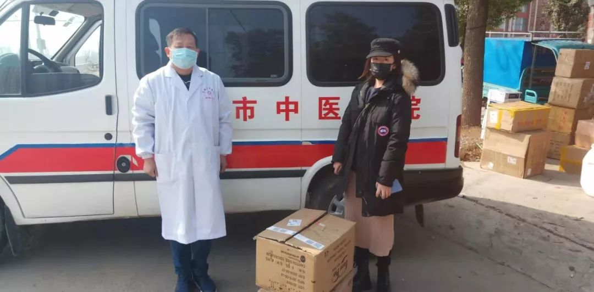
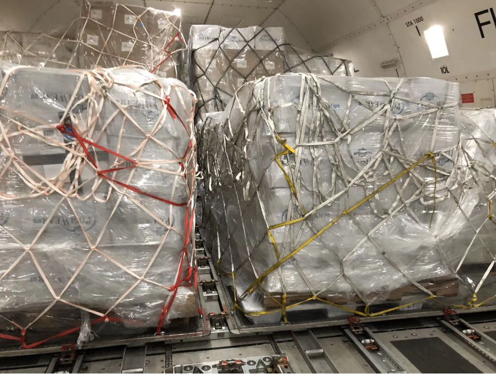
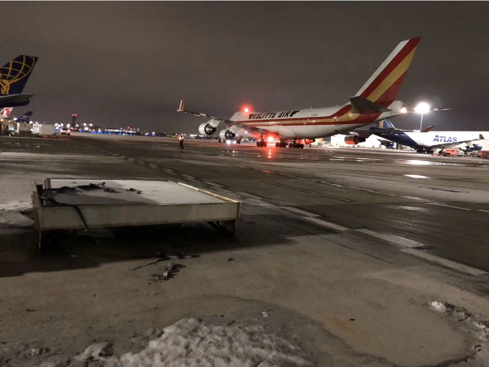

我是互联网人，我没有做逃兵
原文链接 备份链接 《战疫口述记》，是燃财经在新型冠状病毒肺炎期间推出的特别栏目，记录疫情亲历者的观察和感受。本文为第6篇，查看前5篇请点击《我和公司都快熬不住了》《节后返京，太太太南了》《我的“流浪”春节》《农村这样防肺炎》《我在武汉 …


1月30日上午，载有救援物资的飞机抵达中国无锡。/ 采访对象供图
***在这场抗击疫情的战役中，货车司机、在美华人华侨、中国互联网企业、广州导游团……他们放下家人，逆行赶往重灾疫区接力运送救援物资、在国内外四处筹集医疗防护用品。他们知道，自己一定要竭力追赶时间。***

街道空了、人群散了，但被疫情搅动的春节，并不宁静。
每天更新的确诊、死亡人数在时刻抓紧每个人的呼吸节奏，由武汉等疫区医院接连发出的物资短缺信息更是像以一张张“求命符”，催促着刻不容缓的支援、救援。
自大年三十前后，众多企业、民间的自发救援行动接连开展。货车司机、在美华人华侨、中国互联网企业、广州导游团……他们放下家人，逆行赶往重灾疫区接力运送救援物资、在国内外四处筹集医疗防护用品。
他们知道，这是一场战役，自己一定要竭力追赶时间。一定要。
他们知道，这是一场战役，自己一定要竭力追赶时间。/ 图虫创意

北京到武汉火神山
2名货车司机30个小时基建物资货运接力
1月24日，除夕夜。
武汉蔡甸火神山医院相关设计方案完成当天中午，货车司机孙洋（化名）接到了一个中国移动北京公司打来的电话。
“有一批基站设备需紧急送往武汉用于火神山医院建设，明天前需送达，很急，我们现在找不到司机，你能不能跑一趟？”

孙洋从北京运送至武汉的设备物资，该设备用于火神山首个5G通讯基站建设。/ 采访对象供图
彼时，孙洋正在超市为除夕夜的晚餐做采购准备。他老家位于河南，在北京开货车已有5年，平时主要靠一些网络平台或物流公司合作接单。由于今年在北京超市做检货员的妻子除夕夜加班，故两人未返河南老家。
“我那几天关注新闻，知道武汉的疫情很严重，他们又很着急，钱的事都另说了，能跑一趟就跑一趟吧，返程或许还能回老家一趟。” 随即，他放下购物框中的肉菜，转而买了泡面、火腿肠等补给，随即回家驱车赶往中国移动位于北京方庄的仓库取货——共15箱（高2米、宽1.2米），内装30余个机柜设备，用于火神山医院首个5G基站建设。
给妻子打了电话，“她很担心让我回去，但我当时已经上路了。”从北京出发时是下午2点，孙洋前一天晚上已从新闻上知道武汉已经实施交通管制、外地车辆无法进城的消息，“我的车进不去，只能先往那个方向赶，到时候可能有人会来接应我。”
下午5点左右，孙洋抵达河北衡水服务区。已是晚饭时间，他从服务站借来开水，烫了方便面和火腿肠当作自己的年夜饭。正准备吃时，接到家中父亲的电话，“村子已经封路了不让进，你跑完车别回来了。”孙洋只声应好，他没敢告诉父亲，自己此行的目的地是疫情最重的武汉。
服务区也仅剩两三个工作人员在负责加油，孙洋看到，他们都戴上了口罩。停歇的十几分钟时间里，也仅有他一辆车出现在那儿。工作人员问他：“大过年的怎么还跑？”孙洋答送救灾物资时，对方回屋里找了个口罩给他，说了句“那边灾情严重，你自己多注意。”
另一个电话紧接着进来，“你将物资送到武汉东西湖收费站，德邦物流的快递员会在那边接应。“
从北京出发时还是晴天，越往河北、河南走，天气就变得越发雾蒙蒙，夜晚高速上的能见度极地，孙洋打着大灯，强撑着精神，“不敢太慢耽搁时间，又不敢太快怕有什么危险。”进入湖北境内，天已蒙蒙亮，“气温变得更为阴冷，下起了小雨。”
行经近20个小时，1132公里路程，孙洋于1月25日下午三点抵达武汉东西湖收费站，德邦物流武汉车队驾驶教练员闫东方已在那儿等待近6个小时。
家在武汉市区的闫东方于大年初一凌晨2点接到车队总监电话，“白天会有一批5G通讯设备从北京运来，他进不了城，你去接应，需立马送往火神山医院。”

1月25日下午，孙洋和闫东方在武汉西湖东收费站交接物资。/ 采访对象供图
闫东方说，妻子在听闻他第二天还要出门送货时，立即表露出了阻止和担心，“外面传播的病情这么严重，你能不能不去？”他告诉妻子，“员工春节大多都回家放假，这时候我不去谁去呢，去帮武汉一把。”
早上8点，闫东方戴上口罩驱车赶往公司调取货车，沿路的武汉没有半点春节的喜庆气息，“就像一座空城，看不到车，也看不到人。”
1个多小时后，闫东方抵达武汉东西湖收费站。等待的时间，他看见交警、公安、高速路政在查来往车辆，一个开着皖牌出租车的女司机头天送客到武汉，却因封城无法返回。“她一直在哭，说想要回去。但交警告诉她现在疫情严重，为防止传播不允许出城，让她掉头到武汉东西湖区先找个地方住下。”

1月25日下午，孙洋和闫东方在武汉西湖东收费站交接物资，在此地值勤的交警、高速路政协助卸货。/ 采访对象供图
下午3点物资交接顺利后，孙洋往北返回北京，闫东方本打算立即将物资运往30公里外的火神山医院，却突然联系不上医院方的接收人。“载货回公司等了将近一个小时，确认了最终的电话和地址后，我就赶紧送过去。”
大年初一晚上8点，历时近30个小时后，这批物资最终抵达火神山。

日本、印度到英国、迪拜
超百名中国导游从国外人肉带物资回国
同是1月24日，随着文化旅游部发出的通知生效，除已经出发的旅行团，前往国内外的所有线路旅游团业务暂停，广州导游敬一心（化名）和她的所有同行一起进入失业状态。
除了这个打击外，原本喜庆的日子几乎没有任何好消息。1月24日当天傍晚的最新数据显示，全国确诊887例新型冠状病毒肺炎，比前一天多了上百例，各省陆续启动突发公共卫生事件一级响应，武汉当地医院用品食品告急，医生护士不堪重负，崩溃哭泣的视频全网流传。
在各路坏消息围绕下，焦躁不安的敬一心突然觉得自己应该做点事。

负责接机的人从早上6点接到半夜2点，没离开过机场。/采访对象供图
敬一心想，在文化旅游部通知下发前已经带团出国的导游们分散在世界各地，按规定他们还要按合同完成旅程。疫区急需口罩、酒精等防护用品，“但国内几乎已经很难买到，我想能不能让这些导游们各自在所在地进行收购。”
正好一个导游同行群里有人也在表达关切，敬一心当即决定在群里号召大家一起筹集捐款和物资。
两分钟不到，一个相识的朋友便转给她五百块让她自行处置，“别的什么话也没说。”敬一心大受鼓舞，拉上自己丈夫及两个未曾谋面但积极响应的同行各自去募捐，当晚收了将近30万元。

散布在世界各地的中国导游，各自从所在地往国内搬口罩。/ 采访对象供图
为与身处地球不同时区的导游们保持联系，敬一心又拉了三个导游“入伙”，7个人一连四天每天只睡了两三个小时。
微信上也突然多出了一百多个群，每个群功能不同。“因为口罩标准复杂，各地价格不一，每种货品，都要先拿给专业人士看是否符合一线医用标准，价格是否合理，然后再下单。”
境外口罩的价格随着国内形势也在发生着变化。在日本，仅医用口罩这一物资，就有导游遇见过不到0.2元/个和2.5元/个的价格。
相比之下，疫区急缺的防护服在往常并不常见，出售的地方屈指可数。敬一心说，她发出号召后，在国外的导游们一家家药店走访询问。“这里一两件，那里三四件地凑。”

各地导游陆续将物资运送回国。/ 采访对象供图
带团同时还兼顾做医用品采购，各路导游也获得了游客的理解支持。“他们许多人在回程中帮忙搬货，托运时也积极地让出自己的行李配额。”
截至1月30日，参与此次捐赠的人次达1500人（多为旅游从业者和家人），合计募捐70余万元。共从英国和日本购入防护服1250件（其中日本1050件，英国200件），超10万只口罩也被散布在南非、突尼斯、印度、迪拜、巴丹岛、莫斯科等地的逾百名中国导游陆续人肉带回——这是最快的办法。

导游带着口罩下飞机后会在机场当场分拣并通过快递发出。/ 采访对象供图
敬一心说，团队中专门有人驻守在机场附近的酒店，一有带货的导游航班到达便立即去接货。“分拣打包需要的人手，大多临时在导游群里喊，谁方便就临时赶到机场，飞机落地就开始干活。”
大批量医疗卫生用品的运回一度在广州机场引起海关注意。听说情况后，海关当即决定特事特办，派人跟着敬一心团队成员到顺丰快递网点走绿色通道发货。“他们亲眼确认我们把货发往疫区各家求助医院后，便不再过问。”
经过多方联络,这些物资将以“一群人一件事，我们都是旅游从业者”的名义，对接捐赠给湖北地方30家医院,以及直接支援2家广州医院(南方医科大学第三附属医院,广州医科大学附属第一医院)。

由导游背回的物资运往南方医科大学第三附属医院。/ 采访对象供图
更多的求助信息也在涌进，每遇到来电希望获得捐赠的医疗机构人员，敬一心说，自己都要完成一套特别的核查程序——要求出示工作证，说明医院大小规模，多少医护人员，收治了多少疑似确诊病人。她根据相关情况分配发货数量，并在最后要受捐人说上一句，“你摸着良心用人格担保说你没有骗我。”
这几天在物资统筹间连轴转，敬一心也被骗过。
刚开始就有人盗用敬一心的微信头像名称，及朋友圈里收货的一些照片，发到自己朋友圈里，自称委托导游代购医用品捐给疫区，借此骗取捐款。或者直接打电话给敬一心等人，说湖北的医院需要援助，给个假地址骗取物资。
起初因为忙碌，敬一心等人来不及核查，反应过来后报了警，“但一时半会追回已无望。”为防类似事件重演，他们拉了一个叫“纪检委”的群，让专人在募捐大群里一个个翻看朋友圈，将可疑的人员剔除。
被骗钱物一度让敬一心等人十分沮丧，“但当看到越来越多的货物落地通关发向疫区，开始投入一线使用后，些许不悦一扫而空。”

活动发起人之一在湖北接货，湖北一线医院已经用上了导游们带回国的物资。/ 采访对象供图
一连四五天，十几万个口罩经手分发。一天，敬一心团队中的一名成员忽然在群里问了一句，“谁还有口罩能卖我一些？”
“这话看似莫名其妙，但确实是我们这几个人的苦恼。”前几日，敬一心的父母给她打电话：“看你在网上捐了那么多口罩，也不给家里留点，我们老了无所谓，孙子总得保证吧？”
她一个没留。“这些货还是不能动，不然辜负了那么多同行的信任。”
核心发起人的七人群里，除了自己丈夫，其他人敬一心没见过也不认识。但大家已经跟这次援助过的多家医院的医生约好，“春暖花开后，去湖北走走。”
多年带国际团，足迹遍布多国的敬一心，还从来没去过湖北。

由导游背回的物资于1月30日捐赠给湖北黄冈市团风县人民医院500个口罩。/ 采访对象供图

西雅图到芝加哥
5天筹10万余件 美国首架运送防疫物资包机抵鄂
原本属于春节假期的宁静，连续被国内疫情的新闻、物资短缺的信息、美国华人群里各方要募捐消息、和一个来自北京的电话打破。
金治曾于2004年在美读书，后在西雅图微软总部工作，现供职于国内一点资讯公司。此次再度赴西雅图是打算和家人一起度假。
连日在美关注国内疫情的消息，金治愈发不安，“一直没想到这么厉害”。他逐渐在多个华人群内发现很大的矛盾点，“大家都在通过药店或自己的方式去购买物资，却不知如何更快把物资捐赠到国内，交到医生、护士这些最需要的人手里。”
美国西雅图时间1月24日凌晨2点（下文除特别注明外均为西雅图时间），金治接到公司老板CEO杨宇翔电话，“想给武汉捐献1个亿”，问金治想法。金治回：“可以，但现在最重要的是把物资弄到疫区去，要不我们包架飞机，从美国先行将物资运送回国？”
这一决定从提出到落实，仅花了不到7个小时。当天上午9点左右，金治就托朋友通过包机中介公司找到一架1月28日要从美国西雅图飞往中国无锡执行拉货任务的波音747。
飞机找到了，更重要和严峻的任务也摆到了金治面前。
“仅剩不到5天时间筹集货物，那装满飞机的物资从哪里来？而且美国周末不上班，这意味着，我们仅剩72个小时的时间。”
他立即找了在美国工作的三个华人朋友帮忙，开始在近50个华人群内发布消息。
“这几天在群里看到大家救援的热情这么高，深受感动！昨晚公司已决定包机波音747，货机装载量100吨，将大家在美国的抗疫物资运回国，直接运到武汉医院里。目前飞机已经定好，1月28号从西雅图起飞……”
起初有很多人响应，但质疑声很快就来。“你周五才找到飞机，周二就要飞这怎么可能。”“我在美国做中美跨境电商多年，美国这边的海关进度时间根本来不及。”……甚至有一位美国华人医生联系金治说自己要捐赠10万口罩，后又在国内社交平台发帖称“经我本人证实，此次行动有假。”
金治说，他理解绝大多数人的质疑。因为包机决定是临时定下，国内外都还无任何官方信息，而飞机是通过第三方公司紧急租定，且美国包机公司要求看到实际货物内容后才可签订合同，所以租赁合同一时间确实无法拿出。
协调之下，金治又让国内公司紧急出了中英文的公章证明，同时制作了募集海报在朋友圈、群内转播。“由于当时误会很多，为了向大家证明此次行动的真实性，国内的几百名员工也临时加班，上线直播全程向大众呈现物资募集、运送情况。”
海报上印有此次行动志愿者之一、美国华侨崔宸和徐佳琪的电话，崔宸说，周五那晚，质疑声和支持声的电话相伴接连打进，“你们这些骗子就是发国难财的”，“我们支持你们，手里有一批物资可以捐献……”
“我当时和志愿者们讲，不必再去考虑那些杂音，最重要的是把这件事做成，”面对飞机起飞时间的迫在眉睫，金治说，1月24日晚上他们决定，第一批送往疫区的物资由公司全额出资购买。
与此同时，也有更多在美留学、工作的华人志愿者加入物资筹集行动。1月25日至26日两天，由于周末美国售卖医疗用品的大型企业都不上班，金治和志愿者们只能一边通过华人朋友联系购买渠道，一边沿街到超市、便利店用扫货的方式进行物资购买。
为确认所要采购物品符合国内医疗使用标准，金治还在国内公司临时建了个“后援团“，团内成员由其公司员工组成，志愿者们可通过视频直播、图片等方式传回国内确认型号。

物资被装上飞机。/ 受访者供图
渠道方面的进展也并不顺利。一些犹太商人手里有口罩，但“不给看货却要我们先打钱”，金治怕被骗只能作罢，更多的厂家要等到周一上班才能看货。
“美国航空公司要求，周二起飞，周一下班前必须将物资运到机场。”金治每天仅睡3至4个小时，联系了近百家厂家，能实现的渠道仅有两三个，且货源主要集中在纽约、波士顿、亚特拉大。
事情直到周一早上才出现转机。一家位于美国东南部阿拉巴马州的厂家回复称，有10万件左右医用防护服可以提供售卖。金治说，这批物资十分重要。“没有它飞机可能要放空回去。我们也想过之后另一个方案——再包一架飞机，无论如何也要将物资送回国。”
但困难也接踵而至，由于西雅图位于美国西北角，物资一天时间内无法运达，金治及其他志愿者只得再次临时协调，让飞机从位于美国中部的芝加哥起飞。“而从阿拉巴马工厂运货到芝加哥机场都要14个小时，且走货车路运已是最快的方法。”

在美购买、募集物资装机中。/ 采访对象供图
“当时压力非常大，非常大，我们又临时找中介公司协调，你知道平时商业行为上出现这种临时调整是很可笑的，包机公司都怒了，说‘你这干啥玩呢？’。”最终当地美国人知道详情后为之感动，帮忙协调才得以改地起飞，并协助了延迟飞机上货、海关清关工作。
1月28日凌晨12点，金治和崔宸等人飞往芝加哥收货。加之前两天的宣传，芝加哥周边城市的华人群体也开始陆续将自己的捐赠送往芝加哥机场。“当天还有非常多其他各地的华人想提供口罩给我，但已经来不及赶上航班时间了。”
在美读书的高中生杨子霄听闻有包机送物资回国后，也从肯塔基州的路易斯维尔飞往芝加哥，沿着芝加哥市中心的街道跑了三家Walgreen(美国药店连锁销售机构)共买了207盒共2070个口罩。“三家药店的口罩都被我一扫而空了，打出来的收据有近1.9米。”

1月28日晚，芝加哥机场下起了大雪。/ 采访对象供图
最终，金治及志愿者们在美5天购买、筹集到物资共10万余件防护服、近5000只口罩、近5000只手套，均符合医用标准，占满可承载体积约600立方米的波音747货仓70%空间。金治说，在所有物资中，有近10%为华人捐赠。
1月28日晚10点（芝加哥时间），芝加哥的机场下起了大雪，气温降至零下十几度。崔宸说，看着物资全部运上飞机马上就要送回国，“我真的在一边哭一边笑，完全控制不住自己的情绪。”

芝加哥时间1月28日晚12点，运送物资的飞机起飞后，金治（中蓝衣）和志愿者们在机场合照。/ 采访对象供图
北京时间1月30日上午7点，物资落地无锡苏南硕放机场，由中华思源工程扶贫基金会负责后续物资统筹捐赠工作，物流公司嘉里大通、韵达全程免费运送支援物资赴疫情前线。
金治告诉记者，目前受捐赠的机构已包括武汉协和医院、武汉同济医院等医院。此外，物资还将继续运往黄冈市、荆州市等数十家湖北省医院。
（应采访对象要求，文中孙洋、敬一心为化名）

✎作者 | 蒋苡芯 李屾淼
欢迎分享到朋友圈
未经许可禁止转载
广告合作请联系微信号：xzk9681
推 荐 阅 读
点 击 标 题 即 可 阅 读 全 文
这部8分瘟疫纪录片里，都是幸存者留给我们的预警
**出门买不到口罩，没口罩不能出门，我太难了
**
疫情一月记：
我们的防疫大战原来如此惊心动魄
真功夫没落是因为抄袭吗？是因为难吃啊

忙于带盐的陈欧，把聚美优品齁死了

面对风暴，不要让自己患上“情绪瘟疫“

原文链接 备份链接 《战疫口述记》，是燃财经在新型冠状病毒肺炎期间推出的特别栏目，记录疫情亲历者的观察和感受。本文为第6篇，查看前5篇请点击《我和公司都快熬不住了》《节后返京，太太太南了》《我的“流浪”春节》《农村这样防肺炎》《我在武汉 …
原文链接 备份链接 国内外的口罩都在送往武汉，可武汉医院的不仅缺口罩，甚至即将用完。人民日报在其官微发问：究竟是物资紧缺还是物资分配环节存在问题？ 截止到目前，协和医院收到的物资全部来自企业和个人捐赠。物资直接对接到各地疫情指挥部或是各 …
原文链接 备份链接 *************▲************* （武汉红十字会官网截图/图） 全文共*3412*字，阅读大约需要7分钟。 “在物资发放这块，不会说我们想给谁就给谁，所有的分配由卫健委和防控指挥部来决定。” …
原文链接 备份链接 「不是告急！是没有了！！」近两日，武汉协和医院、中南医院再次通过社交网络对外募集物资，对此，网友们纷纷发表质疑：全国各地都在往武汉捐医疗物资，物资到底去哪了？ 文 | 易方兴 郑丹 编辑 | 金石 采购难 没货，没货， …
原文链接 备份链接 海内外源源不断捐赠武汉，各大医院仍全面告急。被指定接收捐赠物资的主要机构湖北省与武汉市红十字会系统成为众矢之的，他们原本应该为重大突发事件做好准备，却一开始就因专业能力不足遭遇了信任危机。 本刊记者探访了武汉红十字会位 …